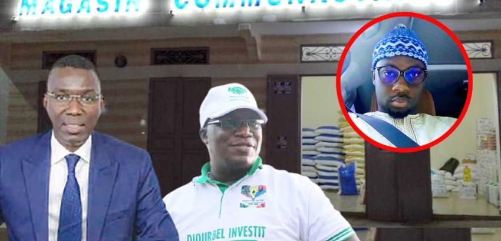
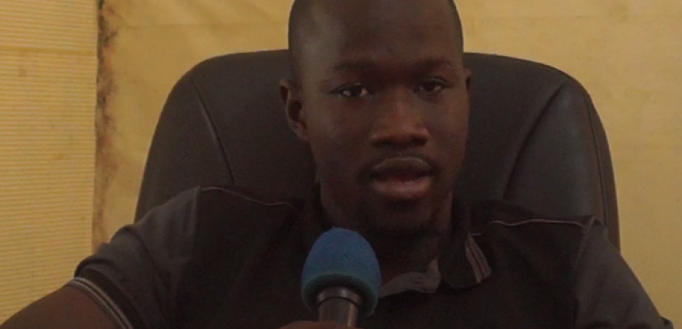
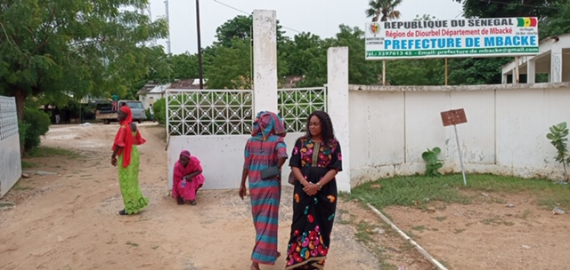

Baol times
| Politique |
|---|
| LA POLICE CAMPE DEVANT LA PRÉFECTURE DE DIOURBEL CE MATIN |
| LYCEE NDAYAAN DIOURBEL- LEG : 184 ÉLÈVES REPRIS SUR LES 384 EXPULSÉS |
|  |
| Locales 2022 – Mairie de Diourbel : Malick Fall toujours à la tête des sondages |
|  |
| Médinatoul Thiounène : Une responsable
et sa bande quittent Malick Fall au profit de Pape Modou Fall |
| Diourbel |
|---|
| Locales 2022 – Mairie de Diourbel : Malick Fall toujours à la tête des sondages |
| Recrudescence des cas de paludisme à Diourbel |
| Grève des boulangers - Diourbel : Ruée vers la boulangerie Mader |
|  |
| Recrudescence des cas de paludisme à Diourbel Mille deux cent vingt-quatre ( 1224) cas de paludisme ont été recensés dans le département de Diourbel de janvier à septembre , a appris baoltimes. Ce qui est étonnant, révèle notre interlocuteur… |
| SENEGAL | ||
.png) |
||
| Le véhicule Sonko conduit au commissariat central par la police | REPORT DU PROCES DE BARTHELEMY DIAS | AIBD : Le chef du réseau de passeurs finalement arrêté ! |